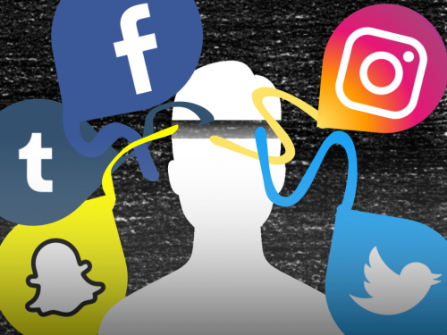

The Online Affects
Let's see the Benefits
The creation of new technology such as social media, represents modern convenience. Connecting with others online and building new friendships have become easier. It also further establishes the existing real-life connections to a more personal level such as continuing to interact even when you can't meet up in person. 94% of teens say they spend time with friends on social media , staying constantly updated on how a friend is doing at that moment in their life and their emotional states.
Moreover, online spaces foster racial inclusion. Black and Hispanic youth say they feel more connected to their friends than their white counterparts. Interestingly, white teens are more prone to receiving support on the platform when things get tough than Hispanic teens.
For those facing stigmatization in the physical world, social media becomes a refuge—a safe space where they can find a supportive virtual community. Often referred to as the “third place” that isn’t their home and work, for people to connect, talk about news, debate, and form connections. Social Media has the benefit of fitting everyone in regardless of background.
Experiencing the Cons
As the virtual world takes precedence over reality, it warps the mental mind, leading people to start valuing online connections over face-to-face interactions. The constant comparison to people one doesn't know personally would form unrealistic expectations to the point they start becoming socially isolated. The idea of not living "life to the fullest" becomes true because they refuse to start interacting with others and would rather stay home and continue to observe how others are going through their life. However, the sad reality is that friends formed online often struggle to transition to real social friendships. The false reality can make it difficult to experience the joys in life.
